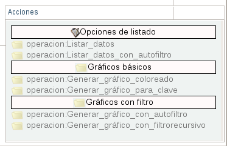

12.4- Módulo Realizar Consultas
Para acceder a este módulo se hace click en el botón Realizar Consultas (ver figura S3.2-1)
Figura S3.2-1. selección del botón Realizar Consultas
Y se desplegara una ventana (ver figura S3.2-2) donde se procederá a realizar las operaciones correspondiente a este módulo

Figura S3.2-2. Menú inteligente, Operaciones del módulo Realizar Consultas
En el menú inteligente aparecen tres (3) secciones, en las cuales se pueden realizar diferentes operaciones, las secciones son: Opciones de listado, Gráficos básicos y Gráficos con filtros.
Opciones de listado
-
operacion:Listar_datos: esta operación permite listar la información de los ticket.
-
operacion:Listar_datos_con_autofiltro:
Gráficos básicos
-
operacion:Generar_gráfico_coloreado: esta operación permite visualizar el flujo de trajo agregando color a cada uno de los estados
-
operacion:Generar_gráfico_para_clave: esta operación permite visualizar el flujo de trabajo de acuerdo con el id de uno de los ticket
Gráficos con filtros
-
operacion:Generar_gráfico_con_autofiltro: esta operación permite visualizar el flujo de trabajo de acuerdo a una clasificación automática de valores desde un determinado campo, construyendo automáticamente nuevos estados que contiene información relacionado con el flujo de trabajo en general.
-
operacion:Generar_gráfico_con_filtrorecursivo: esta operación permite visualizar el flujo de trabajo en función de relaciones recursivas entre los registros de la base de datos, por ejemplo: en caso de división por sub-tareas.